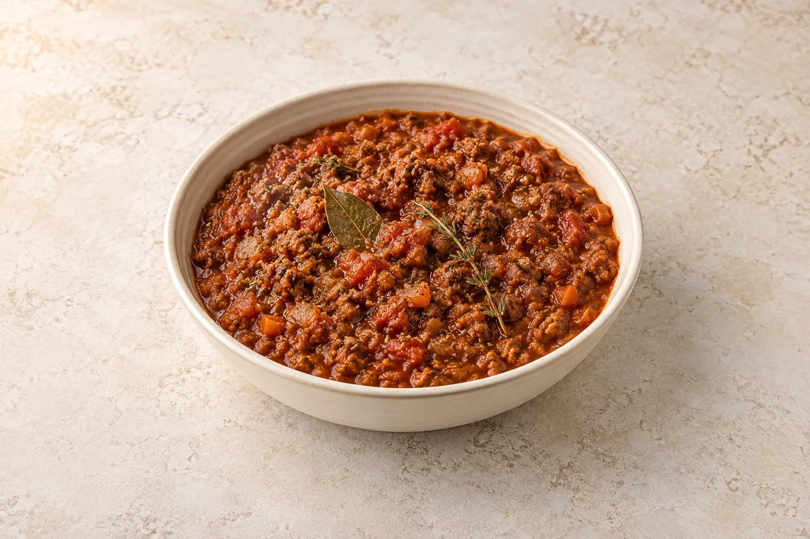

Sauces
Sofritto Ragu
Classic soffritto base with beef and pork, slow cooked into a rich Italian ragu.
person
Ingredient quantities update automatically

Ingredients
Method
- Heat olive oil in a large pan.
- Add celery, onion, carrot, garlic and pancetta.
- Cook gently until soft but not browned (this is your sofritto base).
- Add beef and pork mince.
- Pour in milk and chopped tomatoes.
- Break up the meat with a spoon and mix everything together.
- Add herbs, stock cubes and red wine.
- Bring to a simmer, cover and cook for 1 hour, stirring occasionally.
- Remove lid and cook for another 30–60 minutes until thick and rich.
- Taste and adjust seasoning.
The longer it cooks, the deeper the flavour gets.